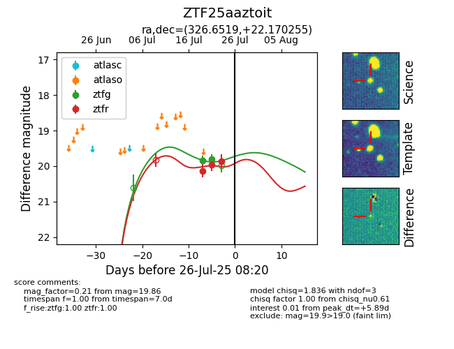

Target ZTF25aaztoit at 2025-07-26 08:20, see:
FINK: fink-portal.org/ZTF25aaztoit
Lasair: lasair-ztf.lsst.ac.uk/objects/ZTF25aaztoit
ALeRCE: alerce.online/object/ZTF25aaztoit
alt names
ZTF25aaztoit (ztf,fink)
coordinates:
equatorial (ra, dec) = (326.6519,+22.17026)
galactic (l, b) = (76.1470,-23.47238)
photometry
last ztfg=19.81, ztfr=19.86
2 ztfg, 3 ztfr detections
